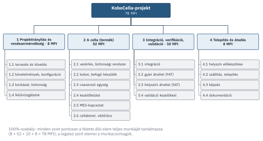
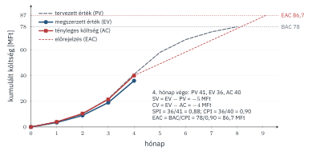
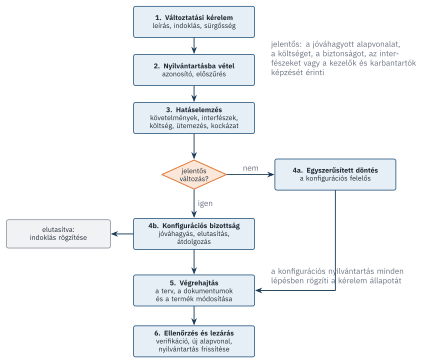

A fejezet feldolgozása után képes leszel:
- áttekinteni a technikai irányítás folyamatait, és elhelyezni őket a V-modell mentén;
- munkalebontási struktúrát készíteni, és arra ütemezést és költségvetést építeni;
- a projekt előrehaladását technikai mérőszámokkal és a megszerzett érték módszerével követni;
- megtervezni a konfigurációkezelést, és szabályozottan kezelni a változtatási kérelmeket;
- technikai felülvizsgálatot előkészíteni és lebonyolítani;
- mérlegelni, mikor és hogyan illeszthetők az agilis módszerek egy rendszerfejlesztésbe.
A V-modell mentén haladó műszaki munkát irányítani kell: meg kell tervezni, követni kell az előrehaladását, kezelni kell a változásokat és a kockázatokat, és rendszeresen értékelni kell az eredményeket. Ezek a technikai irányítási folyamatok a teljes életcikluson átívelnek, és a termékszerkezet minden szintjén alkalmazandók; az ISO/IEC/IEEE 15288 nyolc ilyen folyamatot ír le (ISO/IEC/IEEE 2023, 6.3. szakasz). A 26.1. táblázat mutatja, hol tárgyalja a könyv az egyes folyamatokat.
| Irányítási tevékenység | ISO/IEC/IEEE 15288 folyamat (szakasz) | Ahol a könyv tárgyalja |
|---|---|---|
| technikai tervezés | projekttervezés (6.3.1) | ez a fejezet |
| az előrehaladás értékelése | projektértékelés és -irányítás (6.3.2); mérés (6.3.7) | ez a fejezet; 6. fejezet |
| döntések előkészítése | döntéskezelés (6.3.3) | 10. fejezet |
| kockázatkezelés | kockázatkezelés (6.3.4) | 14. fejezet |
| konfigurációkezelés | konfigurációkezelés (6.3.5) | ez a fejezet |
| technikai adatkezelés | információkezelés (6.3.6) | ez a fejezet |
| minőségbiztosítás | minőségbiztosítás (6.3.8) | 25. fejezet |
| követelménykezelés | a rendszerkövetelmények meghatározásának része (6.4.3) | 6. fejezet |
| interfészkezelés | az architektúra- és a tervmeghatározás része (6.4.4–6.4.5) | 22. fejezet |
26.1. Technikai tervezés: munkalebontás, ütemezés, költségvetés
26.1.1. Munkalebontási struktúra
A munkalebontási struktúra (work breakdown structure, WBS) a projekt végtermékeinek előállításához szükséges hardver, szoftver, szolgáltatások, adatok és létesítmények termékorientált, hierarchikus felosztása (U.S. Department of Defense 2022; NASA 2016, 6.1. szakasz). Azt is tükrözi, hogyan végzik a munkát, és hogyan gyűjtik, összesítik és jelentik a költség-, ütemezési, műszaki és kockázati adatokat (Project Management Institute 2019). A WBS tehát a termékfára (a termékstruktúrára) épül, de a terméket létrehozó munkát is tartalmazza: a projektirányítást, a rendszermérnöki munkát, az integrációt, a verifikációt, a telepítést és a képzést (26.1. ábra).
A WBS legfontosabb szabálya a 100%-szabály: minden szint pontosan a felette álló elem teljes munkáját tartalmazza, se többet, se kevesebbet (Project Management Institute 2019). A legalsó szint elemei a munkacsomagok: önállóan tervezhető, felelőshöz rendelhető, becsülhető és követhető munkaegységek.

26.1.2. Ütemezés és költségvetés
A WBS munkacsomagjai időt igényelnek, és sorrendi kapcsolatban állnak egymással. A hálós ütemterv kifejezetten megadja az egyes tevékenységek függését más tevékenységektől, az erőforrások rendelkezésre állásától és a külső beszállításoktól. A kritikus út a függő tevékenységek leghosszabb sorozata, amely a projekt időtartamát meghatározza (Kelley és Walker 1959). A kritikus út a projekt előrehaladásával változik, ezért folyamatosan figyelni kell; a módszert a Gyakorlati útmutató integrációs terv és WBS eszközlapja mutatja be. A tapasztalat szerint a költség- és műszaki problémák gyakran először ütemezési problémaként jelentkeznek, ezért a csúszás korai jelzés.
A költségvetés a WBS-ből és az ütemtervből épül fel: a munkaerő- és egyéb erőforrásigényből, a közvetlen és közvetett költségekből, a beszállítói és anyagköltségekből és a tartalékból. A WBS, az ütemterv és a költségvetés egymástól kölcsönösen függ, és együtt kell kezelni őket (Fleming és Koppelman 2010).
26.1.3. A rendszermérnöki irányítási terv
A rendszermérnöki irányítási terv (systems engineering management plan, SEMP) a projekt legfelső szintű technikai irányítási dokumentuma: leírja, milyen technikai folyamatokat alkalmaz a projekt, milyen tevékenységekkel, milyen szervezetben, milyen költséggel és ütemezéssel (INCOSE 2023; SEBoK Editorial Board 2025). Már a koncepcionális szakaszban készül, és az életciklus során folyamatosan frissül; a többi technikai tervnek összhangban kell lennie vele. A SEMP fő értéke nem maga a dokumentum, hanem a tervezési munka, amely létrehozza: a terjedelme lényegtelen, az számít, hogy a projekt műszaki szükségleteit lefedje.
26.2. A teljesítmény követése
A technikai értékelés folyamatos visszacsatolási hurok: tervezés, végrehajtás, állapotjelentés, értékelés, döntés, és ha szükséges, újratervezés (ISO/IEC/IEEE 2023, 6.3.2. és 6.3.7. szakasz; NASA 2016, 6.7. szakasz). A jó gyakorlat elvei: előre egyeztetett, jól meghatározott mérőszámok; egységes formátum minden szinten; a mérőszámok WBS szerinti összesítése; a történeti adatok megőrzése a trendek felismeréséhez; és színkódos (piros, sárga, zöld) jelzőzónák a mérőszámokra. A mérőszámokat rendszeresen, például havonta kell követni, a fontosabb felülvizsgálatokon pedig a trendjeiket is értékelni kell (Roedler és Jones 2005).
A műszaki előrehaladást a technikai teljesítménymutatók (TPM) követik (6. fejezet), a költséget és az ütemezést együtt a megszerzett érték módszere (earned value management, EVM). A megszerzett érték az adott időpontig ténylegesen elvégzett munka tervezett költsége; a módszer a műszaki tartalmat, az ütemezést és a költséget együtt kezelve méri a teljesítményt. Három mennyiséggel dolgozik (Fleming és Koppelman 2010):
- tervezett érték (planned value, PV): az adott időpontig tervezett munka tervezett költsége;
- megszerzett érték (earned value, EV): az adott időpontig ténylegesen elvégzett munka tervezett költsége;
- tényleges költség (actual cost, AC): az elvégzett munka tényleges költsége.
Ezekből
ahol SV az ütemezési, CV a költségeltérés, SPI és CPI az ütemezési és a költséghatékonysági index, BAC a teljes jóváhagyott költségvetés, EAC a befejezéskori költség előrejelzése (azzal a feltevéssel, hogy a további munka is a mostani költséghatékonysággal halad) (Fleming és Koppelman 2010).
A KoboCella-projekt költségvetése 78 MFt, időtartama nyolc hónap (26.1. ábra). A negyedik hónap végén a tervezett érték 41 MFt, a megszerzett érték 36 MFt, a tényleges költség 40 MFt (26.2. ábra). Az ütemezési index 0,88, a költséghatékonysági index 0,90: a projekt késésben van, és a vártnál drágábban halad. A befejezéskori költség előrejelzése MFt. Az elemzés két okot talált: a kobot beszállítója két hetet késett, és a kockázatértékelés (14. fejezet) után előírt kiegészítő biztonsági mérések a tervezettnél több munkát igényeltek. A csapat a kritikus úton lévő integrációs lépésekhez tartalék segédeszközt (szimulátort) rendelt, a többletköltségre pedig a tartalékból kért jóváhagyást.

26.3. Konfigurációkezelés és technikai adatkezelés
A konfigurációkezelés célja, hogy a termék konfigurációja mindig ismert legyen és tükröződjön a termékinformációkban, hogy minden változtatás indokolt legyen és káros következmények nélkül valósuljon meg, és hogy a változások kezelése szabályozott legyen. Csökkenti a technikai kockázatot, megkülönbözteti a termékváltozatokat, és összhangban tartja a terméket és a róla szóló információkat (ISO 2017; U.S. Department of Defense 2020; NASA 2016, 6.5. szakasz). Az ISO 10007 szabvány öt tevékenységet különít el (ISO 2017):
- tervezés és irányítás: a konfigurációkezelés stratégiája és terve;
- azonosítás: a konfigurációs elemek (dokumentumok, hardver, szoftver, modellek) kijelölése, egyedi azonosítása és alapvonalba helyezése (2.5. szakasz);
- változáskezelés: a változtatási javaslatok rendszeres benyújtása, indoklása, értékelése, a jóváhagyott változások végrehajtása és ellenőrzése;
- nyilvántartás (configuration status accounting): a jelenlegi és korábbi konfigurációk, a változtatási kérelmek, eltérések és engedélyek állapotának rögzítése és jelentése;
- ellenőrzés és auditálás: annak igazolása, hogy a termék teljesíti a követelményeket (funkcionális audit), és hogy a terve dokumentált és összhangban van a termékkel (fizikai audit).
A változásokat a hatásuk szerint két osztályba sorolják (U.S. Department of Defense 2020). Jelentős (I. osztályú) a változás, ha az alapvonal konfigurációs dokumentációját jelentősen érinti: utólagos átalakítást kíván a már leszállított termékeken, vagy érinti a specifikációt, a költséget, a biztonságot, az interfésszel kapcsolódó termékekkel való összeférhetőséget, illetve a kezelők vagy karbantartók képzését. Kisebb (II. osztályú) a változás, ha a dokumentációt vagy a folyamatokat úgy javítja, hogy a termékek és elemek cserélhetőségét nem érinti. Az eltérési engedély (waiver) dokumentált megállapodás egy követelmény teljesítésének szándékos elengedéséről; nem változtatja meg az alapvonalat (U.S. Department of Defense 2020). A változáskezelés folyamatát a 26.3. ábra mutatja; a jelentős változásokról a konfigurációs bizottság (configuration control board, CCB) dönt.

A validáció során a csapat egy második nyugtázó gombot javasolt a kezelői oldalra (24. fejezet). A változtatás első ránézésre apróság: egy nyomógomb és két vezeték. A hatáselemzés azonban kimutatta, hogy érinti a kezelőfelület interfészvezérlő dokumentumát (I-06), a kezelési útmutatót, a feladatelemzést és a kezelők képzését, és a biztonsági mérnöknek igazolnia kellett, hogy a biztonsági funkciókat nem érinti. A képzésre gyakorolt hatás miatt a változás jelentős, ezért a konfigurációs bizottság hagyta jóvá. A végrehajtás után a változáskérelem csak akkor zárult le, amikor minden érintett dokumentum új változata alapvonalba került, és a kezelők képzése megtörtént.
A technikai adatkezelés a projekt során keletkező műszaki adatok (tervek, modellek, elemzések, tesztadatok, jelentések) azonosítását, tárolását, védelmét, elérhetőségét és archiválását jelenti; a szabványban ez az információkezelési folyamat (ISO/IEC/IEEE 2023, 6.3.6. szakasz). A konfigurációkezeléssel együtt ezen múlik, hogy mindenki ugyanazt a jóváhagyott változatot használja, és hogy a döntések indoklása később is visszakereshető legyen.
26.4. Technikai felülvizsgálatok
A technikai felülvizsgálatok helyét az életciklusban a 2.5. szakasz mutatta be. A felülvizsgálatokhoz kapcsolódó tevékenységek (IEEE 2014): a szakaszok közötti felülvizsgálatok azonosítása, tervezése és lebonyolítása; minden felülvizsgálat céljának, tárgyának, valamint belépési és sikerességi feltételeinek rögzítése; a felülvizsgáló csoport összeállítása; végül a felülvizsgálat nyomán született intézkedések azonosítása és lezárása. A felülvizsgálatok azok a pontok, ahol a technikai mérőszámokat és trendjeiket gondosan meg kell vizsgálni a lehetséges problémák korai jelei után kutatva. A felülvizsgálatot jegyzőkönyv zárja, amely rögzíti az eredményeket, az ajánlásokat és az intézkedéseket a sikerességi feltételek teljesüléséről.
A formális felülvizsgálatok mellett a szakmai átvizsgálások (peer review) kisebb körben, egy-egy munkaterméket (tervet, kódot, elemzést) vizsgálnak meg részletesen. Legszigorúbb formájuk Fagan inspekciós módszere, a fajtáikat az IEEE 1028 szabvány rendszerezi (Fagan 1976; IEEE 2008; NASA 2016, N függelék).
A VárosiBringa előzetes tervfelülvizsgálatának belépési feltétele volt a rendszerarchitektúra, az allokált követelmények, az interfészjegyzék, a dokkoló tervezési FMEA-ja, a kölcsönző alkalmazás első prototípusának használhatósági eredményei és az áthelyezési stratégia szimulációja. A dokumentumokat a bírálók tíz nappal a felülvizsgálat előtt kapták meg; a felülvizsgáló csoportban az önkormányzat, az üzemeltető, az akadálymentességi érdekképviselet és egy független rendszermérnök is részt vett. A felülvizsgálaton 23 észrevétel érkezett, köztük kettő súlyos: a dokkoló és a járda szélességének összeférhetősége két állomáson nem volt igazolva, és a téli üzemre (hó, jég) nem készült forgatókönyv. A felülvizsgálat feltételesen sikeres lett: a következő szakasz elkezdődhetett, de a két súlyos észrevételt felelőssel és határidővel le kellett zárni a részletes tervfelülvizsgálat előtt. A téli forgatókönyv hiánya utólag különösen tanulságos volt (25. fejezet).
26.5. Agilis és hibrid irányítás
Az agilis fejlesztés rövid ciklusokban, működő részeredményeket szállítva halad (2. fejezet). Az Agilis kiáltvány az egyéneket és az együttműködést, a működő terméket, a megrendelővel való együttműködést és a változásra való reagálást helyezi előtérbe (Beck és mtsai. 2001). A legelterjedtebb keretrendszer, a Scrum, rögzített hosszúságú (legfeljebb egyhónapos) sprintekben dolgozik: a termékcélból levezetett, rangsorolt teendőlistából a csapat sprintenként egy használható növekményt állít elő, amelyet a sprint végén az érdekelt felekkel közösen áttekint, majd a munkamódszerét is értékeli (Schwaber és Sutherland 2020).
Hardvert is tartalmazó rendszereknél a tisztán agilis megközelítés ritkán járható: a hosszú beszerzési idők, a biztonsági igazolás és a fizikai integráció nem bontható kéthetes ciklusokra. A gyakorlatban hibrid megoldás terjedt el: a rendszerszintű követelményeket, az architektúrát, az interfészeket és a biztonsági igazolást V-modell szerint, alapvonalakkal és felülvizsgálatokkal kezelik, a szoftveren és egyes alrendszereken belül pedig agilis ciklusokban dolgoznak (INCOSE 2023). Az inkrementális elköteleződésen alapuló spirálmodell ezt kockázatvezérelt döntési pontokkal köti össze: minden ciklus végén az érdekelt felek a bizonyítékok alapján döntenek a folytatásról (Boehm és mtsai. 2014).
A ForgácsTech MES-ének bevezetését a csapat hibrid módon szervezte. A rendszerszintű követelményeket (határidő-tartás, nyomonkövethetőség, a gépvezérlők garanciájának megőrzése), az architektúrát és a gépekkel való interfészeket (22. fejezet) alapvonalba helyezte, és csak konfigurációs bizottsági döntéssel változtatta. A MES beállítását és a kiegészítő szoftverfejlesztést kéthetes ciklusokban végezték: minden ciklus végén a műszakvezetők kipróbálták az új funkciókat a tesztkörnyezetben, és a visszajelzéseik alapján rangsorolták a következő ciklus teendőit. Ez a gyakorlat azonban nem tárta fel időben a kezelői jogosultságok hiányát (24. fejezet), mert a tesztkörnyezet nem tartalmazta a valós munkabeosztást: az agilis visszajelzés csak olyan jó, amilyen valószerű a környezet, amelyben a felhasználók kipróbálják a terméket.
A modellalapú rendszermérnökség (3. fejezet) a technikai irányítást is átalakítja. Ha a követelmények, az architektúra, az interfészek és a verifikációs kapcsolatok egyetlen modellben élnek, a konfigurációkezelés a modell változatainak kezelésévé válik, a változtatás hatáselemzése a modellben lévő kapcsolatok bejárásával automatizálható, a felülvizsgálatok pedig a dokumentumok helyett a modell nézeteire épülhetnek. A modell azonban csak akkor hiteles, ha a szervezet a modell karbantartását is megtervezi és finanszírozza.
Gyakori hiba, hogy a projekt elején gondosan elkészítik a WBS-t, az ütemtervet és a SEMP-et, majd soha többé nem frissítik őket. A frissítés nélküli terv elavul, és a projekt észrevétlenül ellenőrizetlen állapotba csúszhat. A tervek élő dokumentumok: a változáskezelés, a felülvizsgálatok és a havi állapotértékelés teszi őket a projekt irányításának eszközeivé.
- A technikai irányítás folyamatai (tervezés, követelmény-, interfész-, kockázat-, konfiguráció- és adatkezelés, értékelés, döntéselemzés) a teljes életciklusban, minden szinten működnek.
- A WBS termékorientált, hierarchikus munkafelosztás; a 100%-szabály szerint minden szint pontosan a felette álló elem teljes munkáját tartalmazza. Erre épül az ütemterv, a kritikus út és a költségvetés.
- A SEMP a legfelső szintű technikai irányítási terv; fő értéke a tervezési munka, és folyamatosan frissíteni kell.
- A teljesítményt a TPM-ek és a megszerzett érték módszere követi: SPI = EV/PV, CPI = EV/AC, EAC = BAC/CPI.
- A konfigurációkezelés öt eleme a tervezés, az azonosítás, a változáskezelés, a nyilvántartás és az auditálás; a jelentős változásokról a konfigurációs bizottság dönt.
- A felülvizsgálatoknak előre rögzített belépési és sikerességi feltételei vannak, és az intézkedéseket felelőssel és határidővel le kell zárni.
- Hardvert is tartalmazó rendszereknél a hibrid irányítás terjedt el: alapvonalak és felülvizsgálatok a rendszerszinten, agilis ciklusok a szoftverben és egyes alrendszerekben.
- Mi a különbség a termékfa és a WBS között?
- Mit mond ki a 100%-szabály, és miért fontos?
- Miért kell a kritikus utat folyamatosan figyelni?
- Egy projekt költségvetése 120 MFt. Egy adott időpontban PV = 50, EV = 45, AC = 55 MFt. Számítsd ki az SV, CV, SPI, CPI és EAC értékét, és értelmezd!
- Sorold fel a konfigurációkezelés öt elemét!
- Mikor jelentős egy változás? Miért volt jelentős a KoboCella második nyugtázó gombja?
- Mi a különbség a változtatás és az eltérési engedély között?
- Mikor ajánlott a hibrid irányítás, és mi a korlátja az agilis visszajelzésnek?
Megoldás
- A termékfa a rendszer elemeinek hierarchiája; a WBS ezekre épül, de a termék létrehozásához szükséges teljes munkát tartalmazza: a projektirányítást, a rendszermérnöki munkát, az integrációt, a verifikációt, a telepítést, a képzést és a dokumentációt is.
- Minden szint pontosan a felette álló elem teljes munkáját tartalmazza, se többet, se kevesebbet. Enélkül munka maradhat ki a tervből (és a költségvetésből), vagy ugyanaz a munka kétszer is szerepelhet.
- Mert a kritikus út a projekt időtartamát meghatározó tevékenységsorozat, és a projekt során változik: ha egy nem kritikus tevékenység annyit késik, hogy elfogy a tartaléka, kritikussá válik.
- SV = 45 − 50 = −5 MFt; CV = 45 − 55 = −10 MFt; SPI = 0,90; CPI = 0,82; EAC = 120/0,82 ≈ 146,7 MFt. A projekt késésben van, és a költséghatékonysága rossz: ha így folytatódik, mintegy 27 MFt-tal lépi túl a költségvetést.
- Tervezés és irányítás, azonosítás, változáskezelés, nyilvántartás, ellenőrzés és auditálás.
- Ha az alapvonal konfigurációs dokumentációját jelentősen érinti: utólagos átalakítást kíván a leszállított termékeken, vagy érinti a specifikációt, a költséget, a biztonságot, az interfészekkel való összeférhetőséget, illetve a kezelők vagy karbantartók képzését. A nyugtázó gomb a kezelők képzését és a kezelőfelület interfész-dokumentumát érintette.
- A változtatás az alapvonalat módosítja; az eltérési engedély dokumentált megállapodás egy követelmény teljesítésének szándékos elengedéséről, az alapvonal változatlan marad.
- Ha a rendszerszintű követelmények, az architektúra és a biztonsági igazolás stabil alapvonalat kíván, de a szoftver vagy egyes alrendszerek gyorsan változó igényekkel, rövid ciklusokban fejleszthetők. Az agilis visszajelzés csak olyan jó, amilyen valószerű a kipróbálás környezete; a valós használat feltételeit (munkabeosztás, terhelés, környezet) a próbában is képviselni kell.
Saját fejlesztési feladatodhoz:
- készíts legalább háromszintű WBS-t a 100%-szabály betartásával, és rendelj a munkacsomagokhoz felelőst és becsült ráfordítást;
- készíts hálós ütemtervet, és határozd meg a kritikus utat;
- jelöld ki a konfigurációs elemeket, és írd le, hogyan kezeled a változtatási kérelmeket;
- tervezd meg a felülvizsgálatokat belépési és sikerességi feltételekkel;
- használd a Gyakorlati útmutató WBS, felülvizsgálati és konfigurációkezelési eszközlapját.
- U.S. Department of Defense (2020) és U.S. Department of Defense (2022): a konfigurációkezelés és a munkalebontás részletes, gyakorlati útmutatói.
- IEEE (2014) és IEEE (2008): a technikai felülvizsgálatok és a szakmai átvizsgálások szabványai.
- ISO/IEC/IEEE (2023), 6.3. szakasz; ISO (2017): a technikai irányítás és a konfigurációkezelés a szabványokban.
- Project Management Institute (2019); Kelley és Walker (1959); Fleming és Koppelman (2010): a munkalebontás, a kritikus út és a megszerzett érték módszere.
- Beck és mtsai. (2001); Schwaber és Sutherland (2020); Boehm és mtsai. (2014); INCOSE (2023): agilis és hibrid irányítás.
- NASA (2016), 6. fejezet, B, J és N függelék: a technikai irányítás folyamatai, a WBS, a SEMP, a konfigurációkezelés, a technikai értékelés és a szakmai átvizsgálás.